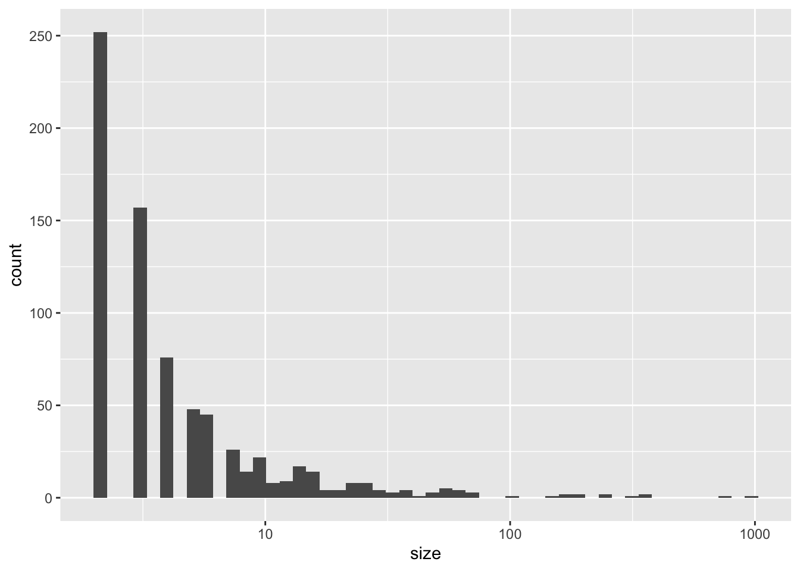
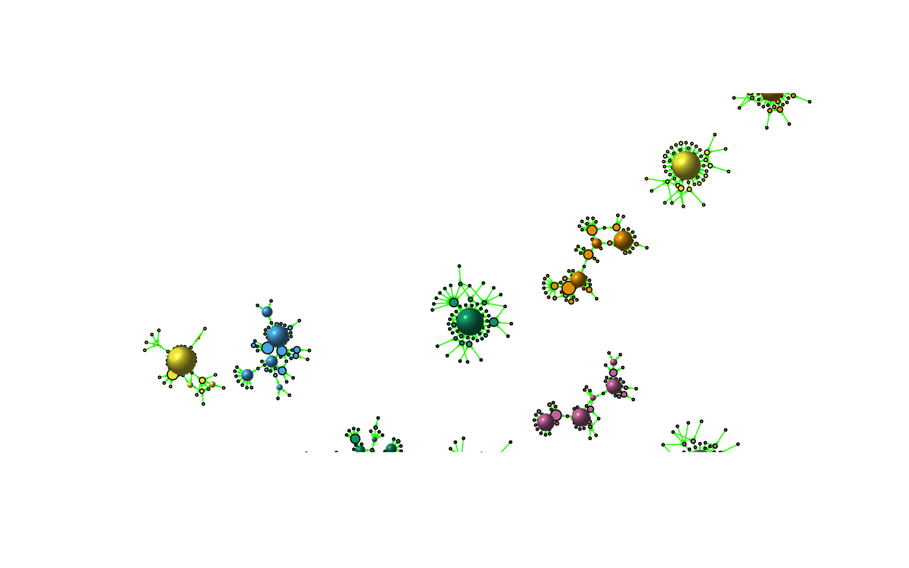
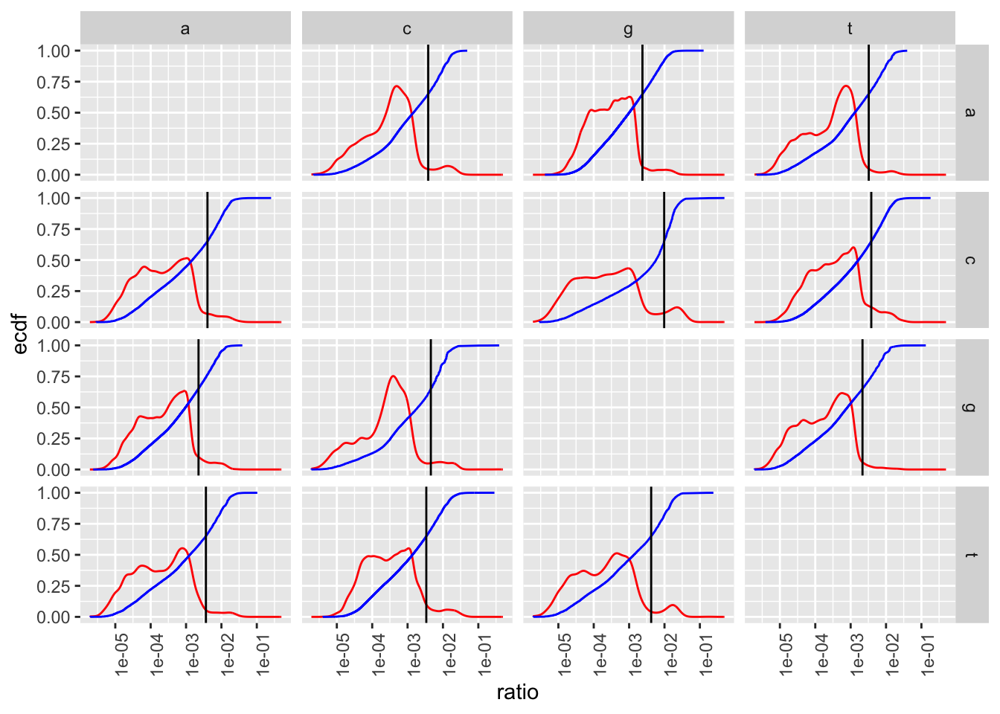
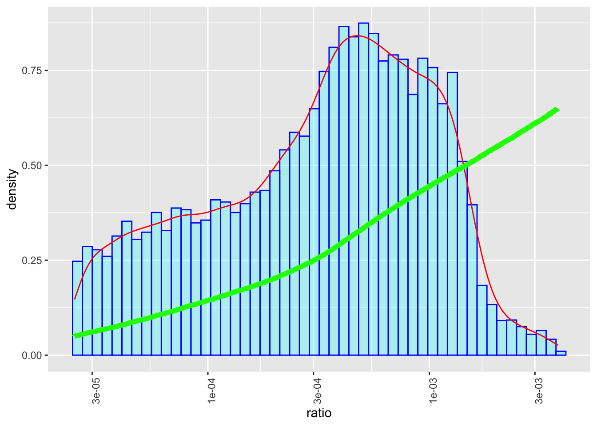

library(tidyverse)
library(igraph)
library(progress)
library(MASS)
library(VGAM)Explorer les erreurs PCR
Chargement des modules R
Lecture du graphe d’une PCR
pcr_ant29 <- read_graph("sample_data/ANT29-2016_R1.gml",format = "gml")
pcr_ant29 <- set_vertex_attr(pcr_ant29,"weight",
value=vertex_attr(pcr_ant29,"weight") * 1e-6)
comp <- components(pcr_ant29)Pour simplifer la visualiisation, on cherche les composantes connexes du graphe, et on regarde la distribution de leurs tailles.
tibble(size = comp$csize) %>%
ggplot(aes(x=size)) +
geom_histogram(bins=50) +
scale_x_log10()
Arbitrairement l’on recupères les composantes ayant entre 50 et 100 noeuds
c_graph_id <- which(comp$csize > 50 & comp$csize < 100)
pcr_ant29_cc1 <- induced_subgraph(pcr_ant29,
V(pcr_ant29)[which(comp$membership %in% c_graph_id)])
comp_cc1 <- components(pcr_ant29_cc1)l <- layout_components(pcr_ant29_cc1)
l <- norm_coords(l, ymin=-1, ymax=1, xmin=-1, xmax=1)
plot(pcr_ant29_cc1,
vertex.label="",
vertex.color=comp_cc1$membership,
vertex.size = sqrt(vertex_attr(pcr_ant29_cc1,"weight"))*1.5e3,
vertex.shape=c("circle","sphere" )[(degree(pcr_ant29_cc1,
v=V(pcr_ant29_cc1),
mode="out")==0)+1],
edge.label="",
edge.arrow.size=0.1,
rescale=F,
layout=l * 2
)
On lit le fichier de ratio et l’on ne garde que les ratio correspondant à :
des substitutions
du site ANT
pcr_ratio <- read_csv("RawSeq/GWM-1107_ratio.csv") %>%
filter(From != "-" & To != "-") %>%
filter(str_starts(Sample,"ANT"))
dim(pcr_ratio)[1] 744628 15pcr_ratio %>%
mutate(Weight_from_corrected = Weight_from * ifelse(From=="a",A,
ifelse(From=="c",C,
ifelse(From=="g",G,T))),
ratio = Weight_to / Weight_from_corrected) %>%
arrange(From,To,ratio) %>%
group_by(From,To) %>%
mutate(r = order(ratio),ecdf = order(ratio)/length(ratio)) %>%
ungroup() -> pcr_ratiopcr_ratio %>%
filter(Weight_from > 20) %>%
ggplot(aes(x=ratio)) +
# geom_histogram(aes(y = ..density..),bins = 50,alpha=0.3,col="blue") +
geom_density(col="red") +
geom_line(aes(x=ratio,y=ecdf),col="blue") +
geom_vline(data = pcr_ratio %>%
filter(ecdf >= 0.65) %>%
group_by(From,To) %>%
summarise(mr=ratio[which.min(ecdf)]),
mapping = aes(xintercept = mr)) +
scale_x_log10() + facet_grid(From ~ To) +
theme(axis.text.x = element_text(angle = 90))`summarise()` has grouped output by 'From'. You can override using the
`.groups` argument.
pcr_ratio %>%
filter(From=="a" & To=="c") -> pcr_ratio_ac
dim(pcr_ratio_ac)[1] 32847 19pcr_ratio_ac %>%
filter(ecdf < 0.65 & ecdf > 0.05 & Weight_from > 20) -> pcr_ratio_65_ac
dim(pcr_ratio_65_ac)[1] 15530 19pcr_ratio_65_ac %>%
ggplot(aes(x=ratio)) +
geom_histogram(aes(y = ..density..),bins = 50,alpha=0.3,fill="cyan",col="blue") +
geom_density(aes(y = ..density..),col="red") +
geom_line(aes(x=ratio,y=ecdf),col="green",size=2) +
scale_x_log10() +
theme(axis.text.x = element_text(angle = 90))Warning: Using `size` aesthetic for lines was deprecated in ggplot2 3.4.0.
ℹ Please use `linewidth` instead.Warning: The dot-dot notation (`..density..`) was deprecated in ggplot2 3.4.0.
ℹ Please use `after_stat(density)` instead.
step <- floor(nrow(pcr_ratio_65_ac)/100)
learning <- pcr_ratio_65_ac %>% arrange(ecdf)
learning <- learning[((1:nrow(learning)) %% step)==0,]
dim(learning)[1] 100 19density2d_max <- function(x,y,n=100) {
xx <- kde2d(x,y,n=n)
p <- which.max(xx$z)
n <- nrow(xx$z)
iy <- floor((p-1)/n) + 1
ix <- p - (iy-1) * n
list(x = xx$x[ix],y=xx$y[iy])
}p_model <- function(alpha,beta,log.p=TRUE) {
p_m <- dnorm(alpha/(alpha+beta),mean = mu, sd=s, log = log.p)
return(p_m)
} proposition <- function(alpha,beta) {
n_a <- rnorm(1, mean = alpha, sd = .5)
n_b <- rnorm(1, mean = beta, sd = 500)
c(n_a,n_b)
}